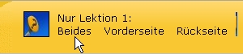

|
| Übersicht |
Die Karteikarten Ihres Sprachkurses: Ausdrucken, mitnehmen & überall lernen!
Die Karteikarten Ihres Sprachkurses: Ausdrucken, mitnehmen & überall lernen!
Wir wollen, dass Sie Ihren Sprachkurs nicht nur am und mit dem Computer nutzen können, damit Sie beim Lernen ganz flexibel sind. Hier haben Sie die Wahl, ob Sie die Karteikarten für alle Lektionen auf einmal drucken oder sie Lektion für Lektion herstellen.
So funktioniert's:Unter "Beides" finden Sie Karten, auf denen nur die Vorderseite mit der Vokabel in
Deutsch und der Fremdsprache bedruckt wird. |
|  |
Unter "Vorderseite" drucken Sie zuerst nur die Vorderseiten aus. |
| Legen Sie nun das bereits bedruckte Papier als Stapel komplett umgekehrt
(mit dem oberen Rand zuerst) in den Drucker zurück. Unter "Rückseite" werden automatisch und passgenau
die Rückseiten bedruckt. |
Für alle, die nach einer technischen Anleitung suchen, wie sie die Karten am besten ausdrucken, haben wir eine solche bereit gestellt. Bitte klicken Sie zuerst mit der linken Maustaste auf den Text und danach auf den Druckbutton Ihres Browsers (oder wählen Sie im Menü Ihres Browsers 'Drucken' bzw 'Print' aus). Sie können außerdem den Fensterinhalt kopieren, in jedes beliebige Textverarbeitungsprogramm (z. B. Word, OpenOffice,...) einfügen, nachbearbeiten und dort ausdrucken. Das funktioniert folgendermaßen:
|
Hier wollen wir Ihnen einen Vorschlag machen, wie Sie das System der Karteikarten am effektivsten nutzen können: Jedes Mal, wenn Sie eine Vokabel auf Anhieb wissen, markieren Sie diese mit einem Strich. Wenn sich auf einer Karteikarte fünf Striche befinden, so haben Sie diese in Ihrem Langzeitgedächtnis gespeichert. Legen Sie diese Karte beiseite und nehmen Sie eine neue Karte in Ihren Lernstapel. Alle weggelegten Karten sollten Sie spätestens nach einem halben Jahr nochmal wiederholen!